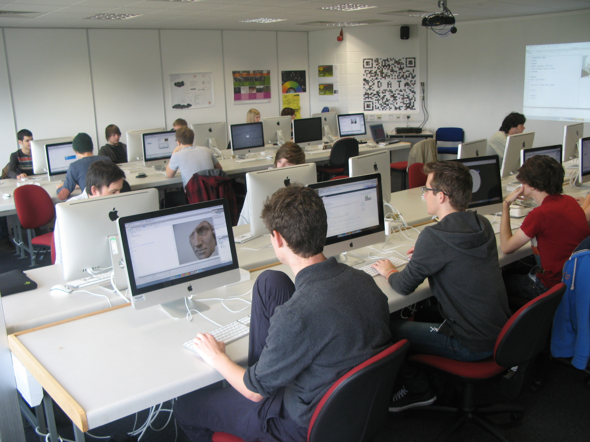
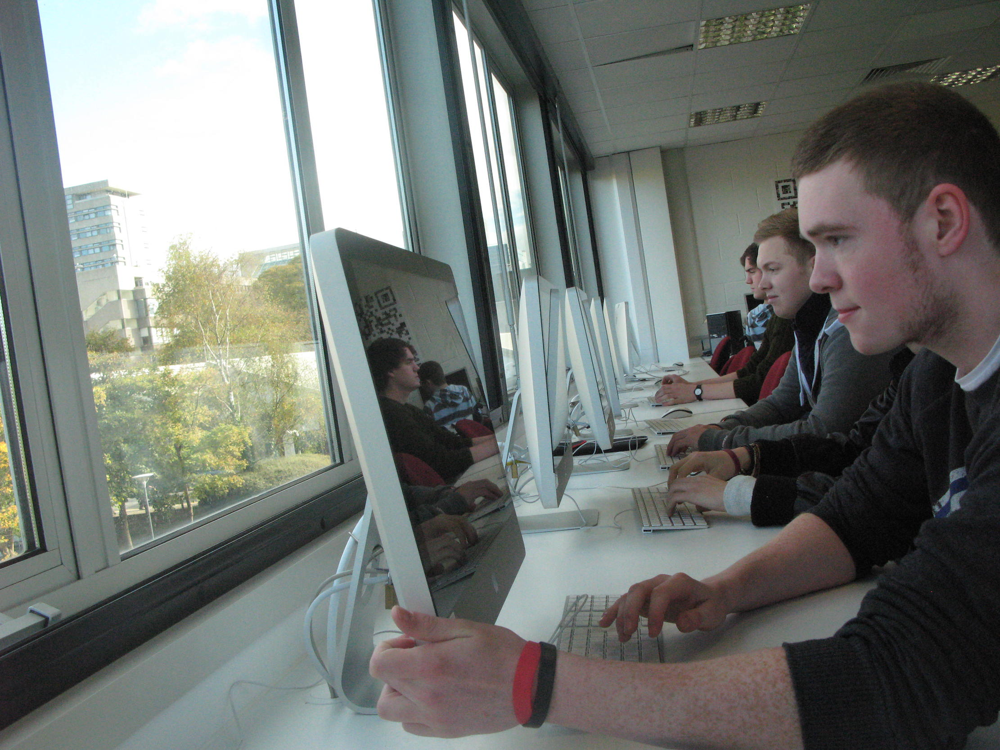

Internet Design encompasses much more than just simple website creation. It is concerned with complex social, technical and cultural systems which pervade modern society, of which "The Web" forms only small, shallow part.
We use the term "internet" to refer to a broad range of technological infrastructure, services, data sources, devices and software that are embedded in our homes, that will carry with us in our pockets and that have such a major influence the way we live our lives. Graduates from this program will emerge with deep understanding of the construction of these systems - not just limited to the application layer, but also the fundamental communication mechanisms, data storage schemes, as well as central and decentralised architectures.
Students will become Full Stack Hackers - proficient in design, markup, styling, dynamic behaviour and complex network programming. They will push the boundaries of what is possible on the web, on mobile, on embedded systems and on other emerging platforms.
They will be the ones who will design and develop the next generation of Internet systems and will have a hand in shaping all of our digital futures.
In your first year, you’ll gain an understanding of programming, data sources, web development, graphic design, typography and digital production techniques. These technical skills are framed within economic, cultural, social and industrial contexts. You’ll also receive an introduction to coding skills and creative design strategies.
Creative Coding
Datacloud
Information Design
Social Network Design
Stage 1 Placement Preparation
Strategies for Internet Design
Type and Image
In your second year, you'll begin to develop real-world scale applications. You'll experience both individual development work as well as group creatively through professional collaborations with industry. You'll be provided with a fundamental foundation for the industrial placement by building your portfolios and constructing your CV.
Advanced Creative Coding
Advanced Web Technologies
Communicating Information
Creative Industries
Net Arcgitecture
Net Experiance
Stage 2 Placement Preparation
Though optional, it is strongly recommended you take a placement year as it will provide you with a broader range of skills to appreciate your final year in the context of real world development. Many employers take on a placement student with the option of recruiting them when they graduate. Typically, you could earn around £15,000–£20,000 depending on the location and type of work.
In your final year, you'll bring together the various threads introduced in previous years. A number of specialised taught modules lead through to large scale group and individual projects in response to complex open briefs. You'll also be provided with the opportunity to customise your degree to a specific area of interest through a major element of the final year project.
Every undergraduate taught course has a detailed programme specification document describing the course aims, the course structure, the teaching and learning methods, the learning outcomes and the rules of assessment.
The following programme specification represents the latest course structure and may be subject to change:BA/Bsc Hons Internet Design
We foster an environment within the University, in Plymouth, the South West and internationally that is highly conducive to learning and personal development.
Students have access to the MediaLab, a dedicated space kitted out with speedy iMacs and the latest software. The IBM-sponsored Smarter Planet Lab is a state of the art facility for experimentation with new design concepts and development techniques. The Immersive Vision Theatre (http://kiosks.plymouth.ac.uk/map.aspx?buildingID=planetarium) is a unique 360° dome cinema, providing breathtaking visual and sonic experiences.
To broaden students’ horizons there are national and international field trips to enjoy, taking part in festivals and cultural events in major vibrant cities and innovation centres. Recent trips include New York, Helsinki, Turin and Berlin.
Plymouth is a modern, fun city with the university at its heart. There’s great nightlife to enjoy, and the amazing countryside and sandy beaches of Devon and Cornwall on our doorstep - great news if you love surfing or the great outdoors! The course is plugged-in to a really vibrant community of local events, festivals and gatherings.
Plymouth has played host to numerous creative events including Explay (href="http://www.explay.co.uk), Young Rewired State (https://youngrewiredstate.org), and the DigPen Web Conference (https://twitter.com/digpenSW). DigPen is a grassroots movement of people who make web and digital media, in the far South West of England. It's all about collaborating, sharing and celebrating the South West's amazing community of designers, developers and entrepreneurs.